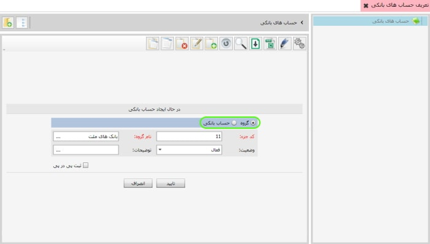
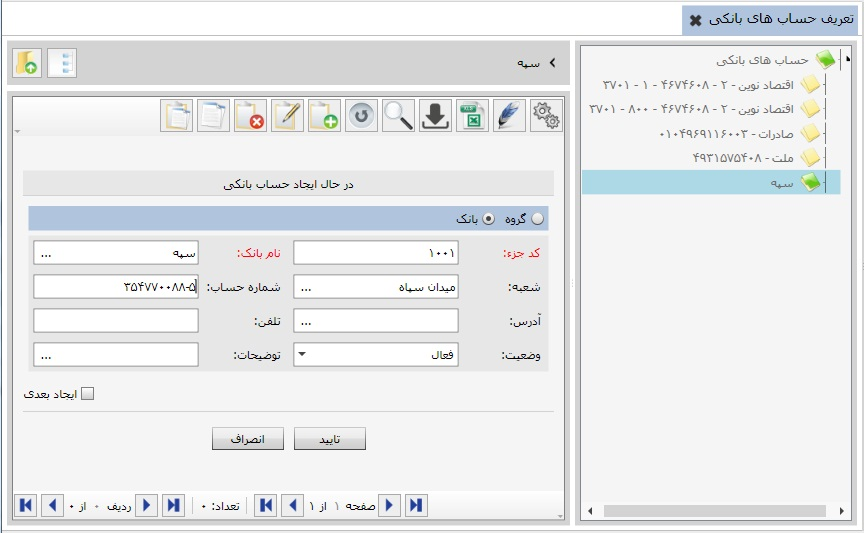

برای تعریف حساب های بانکی خود می توانید از طریق این گزینه اقدام نمایید. در صورتی که در شعب مختلف یک بانک حساب داشته باشید، می توانید ابتدا گروه حساب ایجاد کرده و سپس در هر یک از این گروه های حساب، حساب بانکی متناسب با آن گروه را تعریف کنید.

برای تعریف گروه حساب ابتدا از صفحه نرم افزار گزینه تعریف حساب های بانکی را انتخاب کنید تا صفحه مربوط باز شود سپس روی حساب های بانکی کلیک کرده و گزینه اضافه را انتخاب کنید تا فرم مربوط به آن باز شود.
در فرم مربوط به تعریف حساب های بانکی، همان طور که در تصویر زیر مشاهده می کنید گروه حسابی با نام بانک سپه ایجاد کرده ایم، این گروه پس از ایجاد در لیست قرار می گیرد.


پس از ایجاد گروه حساب، در داخل آن می توان حساب های بانکی را تعریف کرد. برای این کار روی گروه حساب دبل کلیک کنید یا از نمودار درختی سمت راست گروه حساب مورد نظر را انتخاب کنید و سپس گزینه اضافه را بزنید. به شکل زیر توجه کنید:

با انتخاب گزینه حساب بانکی و پر کردن سایر فیلدهای مورد نیاز برای ایجاد حساب روی گزینه تایید کلیک کنید تا حساب بانکی مورد نظرتان ایجاد شود.
شکل زیر نمودار درختی گروه های حساب با زیر گروه های آن ها را نشان می دهد: